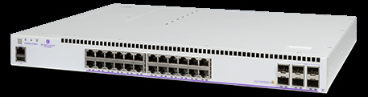

bp-os6560e-datasheet

R（触发场景）
- 校园/中小网边缘、分支与园区工作组接入：
24/48 口 + 最多 6x10G 上联 - 多千兆全口 95W bt（P24Z24/E-P48Z16）的 Wi-Fi 6/7 供电选型
- 半径 500m 分支汇聚用堆叠替代核心（10G/20G 堆叠 + 远程堆叠）
- MACsec 端到端加密接入层；JTIC/NDcPP 认证应答
I（核心理念）
- OS6560/E 是"校园接入价值家族"：
多千兆口 + 最多 6x10G 上联 + 20G 堆叠（原文p55 ："fixed SFP+ with support for up to 6 x 10G interfaces / 10 GigE stacking/remote stacking or 20 GigE stacking"），全口 MACsec、JTIC + NDcPP (EAL1) 双认证。 - 层级：
企业接入层校园档；注意 6560 的 "E" = enhanced 多千兆增强型（区别于 6900 的 E=全口 MACsec 版）。
A1（与相邻系列选型差异）
- vs OS6360：
6360 上联 2x10G、95W 仅 2 口；6560 上联 6x10G（SW-PERF 许可后）、20G QSFP+ 堆叠、Z 型多千兆全口 95W、双插槽电源可扩。 - vs OS6370：
6370 Z 型多口 2.5G + 2x95W + Smart Tool；6560-Z 全部多千兆口 95W + 6x10G 上联 + 20G 堆叠 + MACsec + JTIC——加密和高上联带宽选 6560，多千兆口密度和 OT 工具选 6370。 - vs OS6860：
6860 是旗舰（95W + 200G 堆叠 + 3.4kW PoE + fabric）；6560 做预算型校园边缘。
A2（规格细节速查表）
机型矩阵（原文p56 表 1 / 原文p59 商用型号）： 千兆型： | 型号 | RJ45 | 1G SFP+ | 1G/10G SFP+ | 20G QSFP+ 堆叠 | PoE 满载 | |---|---|---|---|---|---| | OS6560-24X4/P24X4 | 24（P 型 PoE+） | 2 | 4 | 0 | 600W（P24X4） | | OS6560-48X4/P48X4 | 48（P 型 PoE+） | 2 | 4 | 0 | 920W（P48X4） | | OS6560-X10 | 0 | 0 | 8 | 2 | —（10G 扩展/堆叠单元） | 多千兆型（全部多千兆口符合 802.3bt 95W + 802.3bz，原文p56 注）： | 型号 | 1G 口 | 多千兆口 | SFP+ 1G/10G | 20G 堆叠 | PoE 满载 | |---|---|---|---|---|---| | OS6560E-P24Z8 | 16 | 4@2.5G + 4@5G | 2 | 0 | 600W | | OS6560-P24Z24 | 0 | 24@2.5G | 4 | 2 | 600W（PXZ24 捆绑 920W） | | OS6560E-P48Z16 | 32 | 12@2.5G + 4@5G | 4 | 2 | 920W | 上联与堆叠：10G/远程堆叠或 20G QSFP+ 堆叠（原文p55 ）；VC 8 台（原文p60 ）；堆叠容量每台 40~80 Gb/s、整机 320~640 Gb/s（原文p56 /原文p57 ）；SW-PERF 许可把 2 个 1G SFP+ 升 10G 达到 6x10G（原文p59 ）。 交换容量与包转发（原文p56 /原文p57 ）：千兆型 168/216/240 Gb/s（125~178.6 Mpps）；多千兆型 124~336 Gb/s（83.33~241 Mpps）。 电源体系：1+1 热插拔、1RU；非 PoE 型固定主电源 + 模块备电，PoE 型双模块且支持负载均衡扩预算（原文p58 ）；电源家族 OS6560-BP 150W（非 PoE）/BP-P 300W/BP-PH 600W/BP-PX 920W；双 PS 负载分摊后最高 1645W（BP-PX 双配，原文p58 ）。 Layer 特性：静态 + RIP 默认、stub OSPFv2/v3 默认，完整 OSPF（2 区域/16 接口/1k OSPF 路由）需 OS6560-SW-AR（原文p61 ）；Metro 特性（Q-in-Q/G.8032/EPL-EVPL/SAA/TR-101）需 OS6560-SW-ME（原文p61 ）；16k MAC、9216B 巨帧；1588v2 仅 48 口型（原文p55 ）；OpenFlow 1.3.1/1.0；无 SPB/VXLAN/MPLS。 MACsec 端口分布（原文p56 /原文p57 ）：千兆型全 1G RJ45 + 2x1G SFP；E-P48Z16 额外含 2x10G SFP+（仅 904235-90 批次，原文p58 注）；P24Z24 为 0（无 MACsec 口）。 硬件平台：1~2GB RAM、1~2GB flash；风扇 1~2；MTBF 296k~885k 小时（原文p56 /原文p57 ）。 功耗/环境：系统功耗 36~116W；0~45°C；噪音 37~55 dBA（原文p57 /原文p58 ）。 规格红线：P24Z24 无 MACsec；X10 无用户 RJ45 口；1588v2 限 48 口型。
E（适用场景）
- 半径 500m 的分支汇聚：
6560 48 口 + 6x10G + 10G/20G 堆叠即可，避免上 6900（C12，原文p54 ） - Wi-Fi 6/7 楼层：
Z 型全口 95W bt（P24Z24 全 2.5G；E-P48Z16 12x2.5G + 4x5G） - 军工/情报类客户：
JTIC 认证硬件软件 + NDcPP EAL1（原文p55 ） - 运营商托管服务边缘：
加 SW-ME 许可获得 Metro/EPL 特性（原文p61 ）
B（限制与坑）
- OS6560-P24Z24 无 MACsec 能力口（原文p57 表：
MACSec capable ports 0）——加密需求选 E 型 - E-P48Z16 的 2x10G SFP+ MACsec 仅限新批次 904235-90（原文p58 注 (*)）——旧批次核对
- 6x10G 上联中 2 口要 SW-PERF 许可（默认 4 口 10G，原文p59 ）；完整 OSPF 要 SW-AR（默认仅 stub）
- 1588v2 只在 48 口型（原文p55 ）——时间同步需求别选 24 口
- MTBF 最低 296k 小时（E-P48Z16，原文p58 ）——冗余设计兜底
- 6360-SW-PERF 类似许可在 6560 是 OS6560-SW-PERF，同系列内跨型号不通用
来源：bp-omniswitch-datasheets DOC 7（p54-63，MPR00364217EN October 2025）；verified.md C12/P8/X15/F1/F3/F4